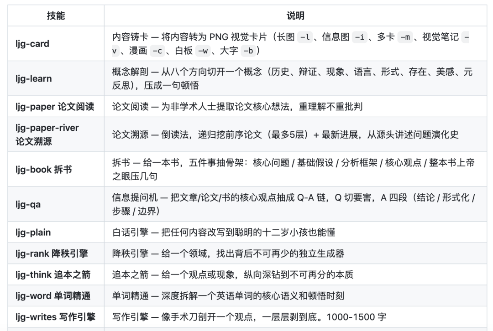
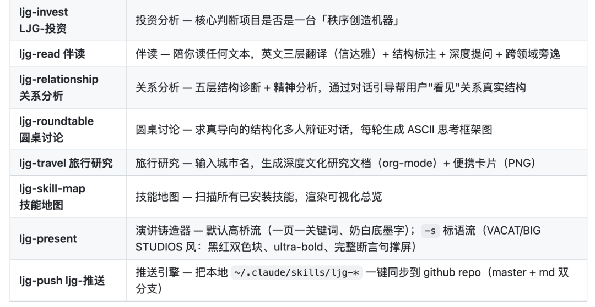
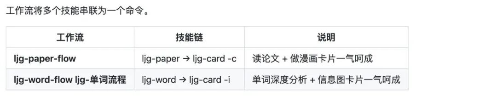

一、数字生命卡兹克
卡兹克，公众号「数字生命卡兹克」主理人，拥有百万粉丝的科技自媒体，单篇阅读常常10w+。我关注他很久了，他的创作水平和思维逻辑，都非常值得学习。我把他这一段时间发布的4个Skill，整理分享出来给大家。
🔗 https://github.com/KKKKhazix/khazix-skills
1. 卡兹克风格写作Skill
这是一个公众号长文写作技能，是卡兹克把自己的写作方法论封装成了Skill。除了文章的5种写型，风格内核、绝对禁区清单、口语化词组推荐等方法之外，最让人眼前一亮的就是HKR选题判断（Happy趣味、Knowledge知识、Resonance共鸣）以及四层自检体系（硬性规则、风格一致性、内容质量、活人感）。
安装命令：
帮我安装这个skill：https://github.com/KKKKhazix/khazix-skills/tree/main/<khazix-writer>2. 洁癖Skill
安装命令：
帮我安装这个skill：https://github.com/KKKKhazix/khazix-skills/tree/main/<neat-freak>3. AI Hot Skill
装上这个AI热点Skill之后，你再也不需要自己去刷AI新闻了，它让 Agent 用一句话拿到 aihot.virxact.com 每天的 AI HOT 日报和全部 AI 动态。这个AI热点网站是卡兹克自己做的，用来监控AI热点、辅助找选题。
安装命令：
帮我安装这个 skill：https://aihot.virxact.com/aihot-skill/4. 横纵分析法Skill
帮你搞懂一个产品 / 公司 / 概念 / 人物到底是怎么回事。纵向把研究对象从诞生讲到当下，像讲故事一样把演变讲完整；横向把同期所有主要竞品摆出来逐一对比。最后两条线一交叉，给你一份排版精美的 PDF 研究报告，10,000–30,000 字。
安装命令：
帮我安装这个skill：https://github.com/KKKKhazix/khazix-skills/tree/main/<hy-analysis>安装命令：
npx skills add alchaincyf/huashu-skillshuashu-research | |
huashu-topic-gen | |
huashu-slides | |
huashu-article-edit | |
huashu-article-to-x | |
huashu-douyin-script | |
huashu-video-outline | |
huashu-video-check | |
huashu-script-polish | |
huashu-speech-coach | |
huashu-wechat-image | |
huashu-xhs-image | |
huashu-design | |
huashu-md-to-pdf | |
huashu-proofreading | |
huashu-info-search | |
huashu-material-search | |
huashu-prompt-save | |
huashu-data-pro | |
huashu-agent-swarm | |
huashu-image-upload |
安装命令：
npx skills add lijigang/ljg-skills

